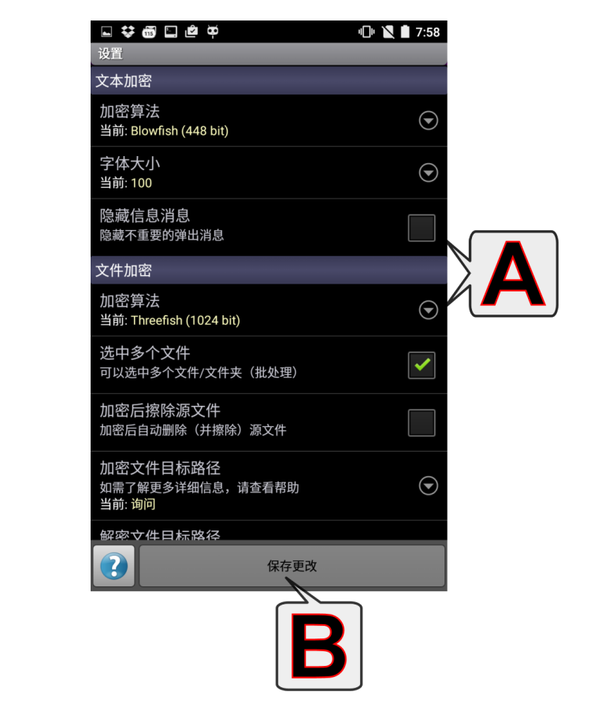

设置
（轻触某个字母或向下滚动，即可查看更多主题）

A - 可用的设置
- 密码保险箱
- 算法：密码保险箱的加密算法。
- 密码列表字体大小：密码（项）列表区中文字的大小（密码名和密码的字体大小）。
- 自动备份文件夹：如果启用，每次密码保险箱内容发生变化，密码保险箱数据会导出（PWV_AutoBackup.pwv文件）到所选的文件夹。它可以备份到云端存储设备。
- 锁定屏幕：当应用进入后台运行（当应用被“最小化”）时锁定密码保险箱的屏幕。
- 文本加密
- 算法：文本加密的加密算法。
- 字号：未加密/加密文本区中文本的大小。
- 隐藏信息消息：隐藏不重要的弹出消息（例如： 消息已被复制到...）。
- 最终编码：输出文本编码。可用的编码： Base64 (PTE default), Base32 (RFC 4648), 仅数字(0-9)
- 添加空格：在第N个字符后 - 以对文本编码。
- 锁定屏幕：当应用进入后台运行（当应用被“最小化”）。
- 文件加密
- 算法：文件加密的加密算法。
- 选中多个文件：（只限 Pro 版） - 启用/停用文件多选模式（批处理）。
- 加密后擦除源文件：加密后自动删除（并擦除）源文件。
- 解密后删除.enc文件：解密后自动删除源文件（加密的.enc文件）。
- 加密文件目标路径：
与源文件相同：将输出文件存放于输入文件所在的同一目录。
预定义位置：使用文件加密应用中的“自定义目录”按钮（位于左上角 -  ）来设置位置（设置当前目录为... → 加密文件目录）。
）来设置位置（设置当前目录为... → 加密文件目录）。
询问：应用每次加密之前都会向您询问输出文件的位置。
- 解密文件目标路径：设置方式与上述“加密文件目标路径”相同。
- 显示替换 .enc 文件的警告：当指定 .enc 文件名已存在时显示“继续/取消”对话框。
- 缩略图大小：设置图像缩略图大小或禁用缩略图。
- 锁定屏幕：当应用进入后台运行（当应用被“最小化”）时锁定文件加密应用的屏幕；必须设置会话密码。
- 通用设置
- 导入/导出路径：应用的导入/导出目录。
- 应用程序启动保护：在每次启动应用程序时要求身份验证。此密码仅用于启动身份验证。它不影响加密功能或相关的锁屏功能。
- 防止截图：安全处理窗口内容，防止它出现在截图中。此选项可在Android 4.4或更高版本中使用。需要重新启动应用程序。
- 允许使用 Unicode 密码：默认情况下只有值为 32-126 的 ASCII 字符允许作为密码（=> 兼容性，几乎每个设备/系统都有足够打出所有这些字符的键盘）。如果“允许使用 Unicode 密码”，您键盘上可以打出的每个字符都可以作为密码。
- 禁用本机代码算法：仅使用平台独立版本的代码（仅当在本设备上使用本机代码会引发错误的情况下使用）。
- 显示子应用退出对话框：确认返回主菜单（只在点按“返回”按钮时出现此提示，直接按“主菜单”按钮将无此提示，直接返回）。